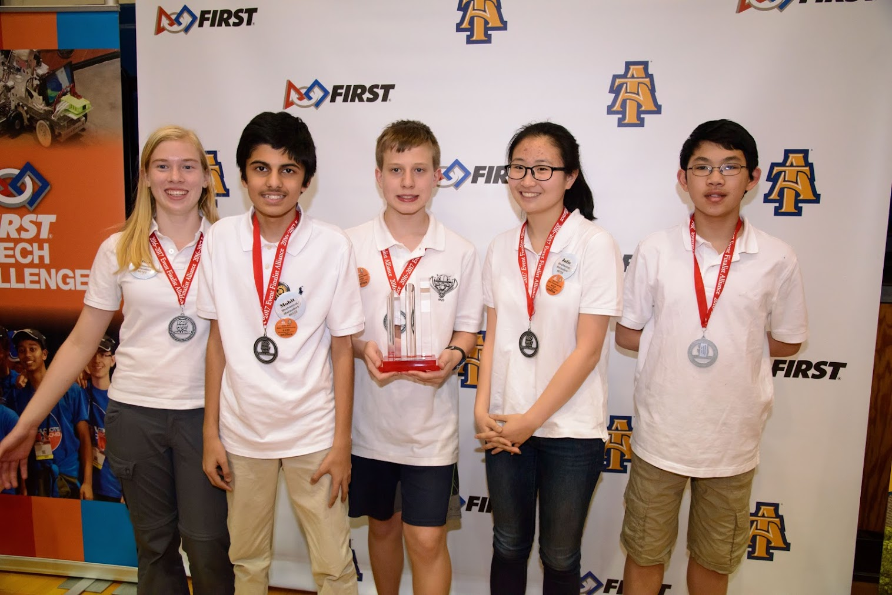

We are FTC Team 6123, the Mechanical Marauders. A neighborhood team founded by the Flack family. This is our website.
Team 6123 the Mechanical Marauders is a community team. It was originally created in 2008 as FIRST Lego League (FLL) team Mechanical Mayhem because there was nothing in the area. In 2012, the team moved from FLL to FIRST Tech Challenge (FTC). Over the years we have grown as a team even though we meet in a team member's attic. In 2014-2015 during Cascade Effect, the team advanced to Southern Super Regionals after winning the North Carolina State Championship. The next year we set our sights even higher. In the FIST Res-Q Challenge, we advanced to the Worlds Championship after placing second in our division at the Southern Super Regional Championship.
Mechanical Marauders at the Southern Super Regional

Mechanical Marauders at States 2017
